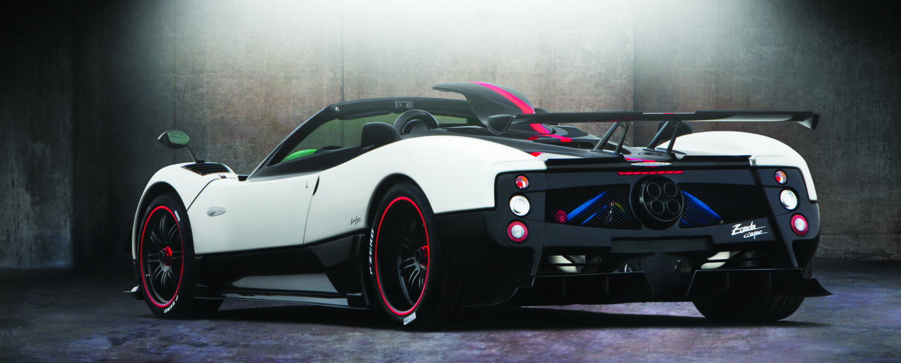
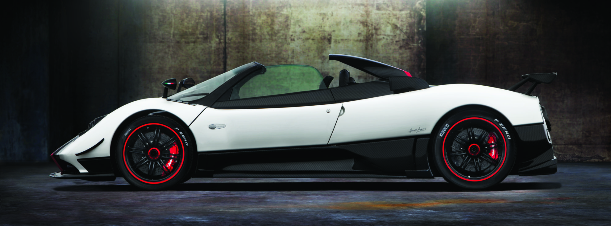

The Pagani Zonda Cinque Roadster represents one of the most refined and extreme expressions of the Zonda platform, combining raw performance with a level of craftsmanship and elegance rarely seen in hypercars. Limited to just five units, it stands as both a technical achievement and a piece of automotive art.
At its core is a naturally aspirated AMG-derived V12, celebrated not only for its power but for its unmistakable sound, a mechanical symphony that defines the Zonda experience. It can be described as the best sound per revolution since the engine revs only to just over 7000rpm. The car’s lightweight construction, built around advanced carbon-titanium composites, allowed Pagani to achieve exceptional rigidity while keeping weight to a minimum, enhancing both performance and responsiveness.

Aerodynamically, the Cinque introduced significant advancements, including a more aggressive front splitter, rear diffuser, and a prominent roof-mounted air intake. In the case of the Roadster, the air intake started just behind the roof, maintaining its functionality, while letting you enjoy the breeze, or more so the scream to the max. These elements worked together to increase downforce and stability without compromising the car’s visual purity.
What truly sets the Cinque Roadster apart is its balance of extremes, brutal performance paired with meticulous attention to detail, from exposed carbon finishes to precision-machined interior components. It embodies Pagani’s philosophy of blending engineering and artistry, resulting in a car that is as elegant as it is exhilarating.
| Engine | 7.3L Naturally Aspirated V12 |
| Power | 670bhp |
| Weight | 1280kg |
| Transmission | 6-speed Automated Manual |
| 0-62 | 3.4 s |
| Top Speed | 217mph |
| Year | 2010 |